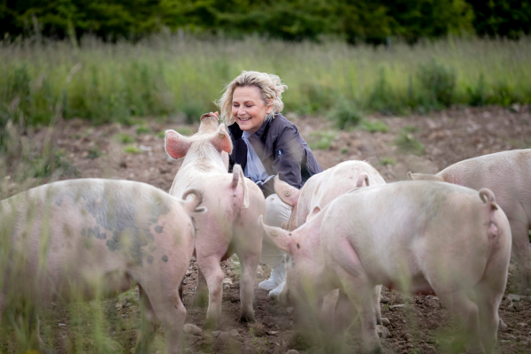
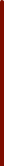

GRISE I INDUSTRILANDBRUGET
Hvis du har set en gris øjnene, er du ikke i tvivl. Bag blikket er behov, bevidsthed og en begavelse, som er meget lig din egen.
Men det er de færreste forundt at møde grisens blik. Selv om der hvert år fødes 40 millioner grise i Danmark, ser vi dem ikke, fordi 98 procent af dem lever og dør i industriens anlæg.
Dyrenes Beskyttelse arbejder for at gøre grisene synlige og at få flere og flere danskere til at tale højt om det liv, som vi giver grisene.

Dumme svin findes ikke
Grise er kloge og sociale dyr, men i dansk industrilandbrug fastspændes søer, 24.000 pattegrise dør hver dag, og grisene lever tæt pakket uden adgang til det fri. Den nye regering har lovet et opgør med industriens dårlige forhold, men grisene venter stadig. Hjælp os med at holde dem fast på løftet.
0
personer har allerede skrevet under.
Nu er det din tur!
Den kloge gris
Grisen er et af de dyr, som ligner mennesker mest. Fra de indre organer til den mentale kapacitet. Forstået sådan, at grisen er intelligent på en måde, som mennesker kan sammenligne os med og spejle os i. Grise kan udsætte behov, løse opgaver, lege gemmeleg og samarbejde - og de er renlige, har et varieret sprog og en kompleks social adfærd.
Men grisene er spærret inde i industriens anlæg, så vi møder dem ikke, og vi ser dem ikke. Og de færreste tænker på, hvilket liv grisen på tallerkenen har levet.
Dyrenes Beskyttelse arbejder for at gøre grisen synlig og få flere og flere til at tale højt om grisens liv i industrien, så vi kan presse på for at give grisene leveværdige liv, inden de bliver til mad.
Den vilde gris
Moderne gris, gamle behov: Den moderne tamgris stammer faktisk fra vildsvinet, som har levet vildt i mere end to millioner år.
For 9.000 år siden begyndte man at tæmme grisen. De tamme grise lignede vildsvinene, men med tiden har de mistet pelslaget, og så er soen blevet meget større.
De behov, som tamgrisen har i dag, ligner dem, som vildsvinet havde og stadig har. For eksempel vil soen bygge rede og passe sine unger, hvis hun får mulighed for det.
I Danmark bliver der produceret cirka 40 millioner grise hvert år. De bliver født af omkring en million søer.
I naturen kan en so blive over 15 år gammel. I den industrielle produktion bliver soen typisk kun et til tre år gammel, før hun bliver skiftet ud og sendt til slagtning eller dør i stalden af sygdom eller skader.
Det første døgn
Når soen har født, etablerer hendes unger den såkaldte patteorden i løbet af de første døgn. Det er deres første rangorden, hvor de hver især tilkæmper sig en patte, som derefter er deres egen, og som de altid søger hen til. Ved at fordele pladserne hos moderen undgår de unødige slagsmål under diegivningen.
Den moderne so er avlet til at føde i gennemsnit 20 grise. Mange søer får endnu flere unger, men hun har kun 14-15 patter til at give die. Det er et regnestykke, der ikke går op og umuliggør den naturlige patteorden.
I det konventionelle landbrug er målet med soen, at hun skal levere flest mulige grise om året. Hun er cirka otte måneder gammel, første gang hun bliver drægtig.
Herefter kommer hun ind i en fast cyklus i stalden: Først løbestald, så drægtighedsstald og dernæst farestald. Igen og igen.
Hendes unger bliver taget fra hende allerede efter tre-fire uger, så hun kan blive drægtig igen.
TIDSLINJE
Det har vi flyttet for grisene
I mange år har Dyrenes Beskyttelse sat fokus på de alvorlige problemer i de danske stalde og krævet bedre forhold for grisene. Her kan du se nogle af de vigtigste skridt på vejen.

2017
Kampagnen "Burgris - nej tak" sætter grisenes forhold i det industrielle landbrug på den politiske og offentlige dagsorden.

2018
Efter Burgris-kampagnen gennemføres konkrete tiltag: Kastration uden bedøvelse forbydes. Millioner af grise får bedre dyrevelfærd.
2019
Rigsrevisionen undersøger Fødevarestyrelsens svigt med dyretransporter – efter afsløringer fra Dyrenes Beskyttelse.
2022
Dyrenes Beskyttelse dumper landbrugets frivillige indsats for bedre svinevelfærd. Der er tilbagegang eller kun ringe fremskridt.
2024-2025
Dyrenes Beskyttelse kræver totalforbud mod fiksering af søer og samler underskrifter for grisene. I september 2025 afleveres 108.000 underskrifter til Folketinget.
2026
I januar lancerer Dyrenes Beskyttelse borgerforslag om akut hjælp til grisene.
I marts bliver grisene en del af valgkampen, og tusinder demonstrerer for grisene.
I april retter Statsrevisorerne kritik af kontrollen i staldene – blandt andet efter nye afsløringer fra Dyrenes Beskyttelse.
I juni skrives borgerforslagets fire krav ind i regeringsgrundlaget.
I juli slår borgerforslaget rekord i antal underskrifter.
... Og kampen fortsætter.
TEST DIN VIDEN
Hvor meget ved du egentlig om grise?
Bliv oplyst: